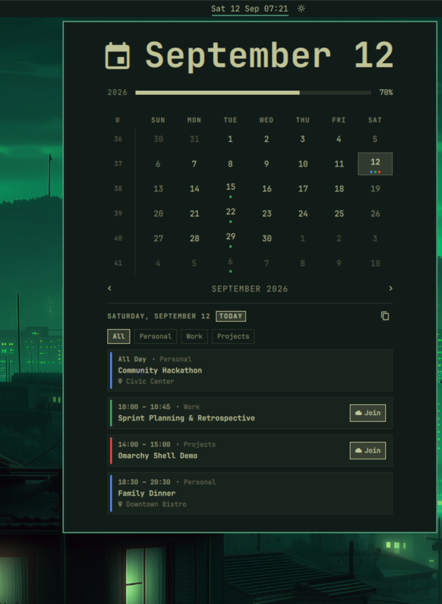
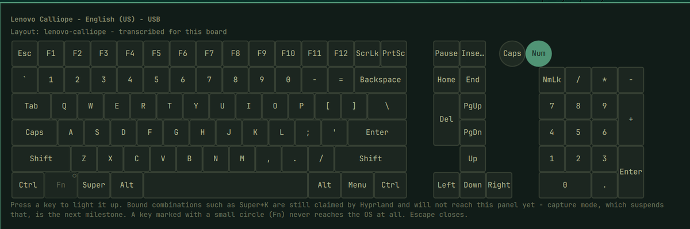
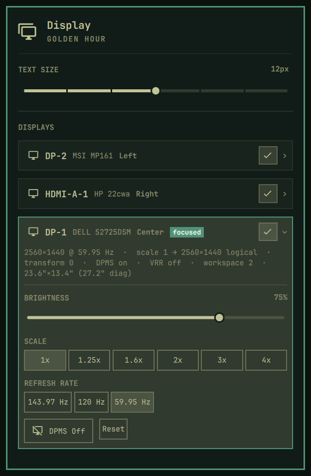
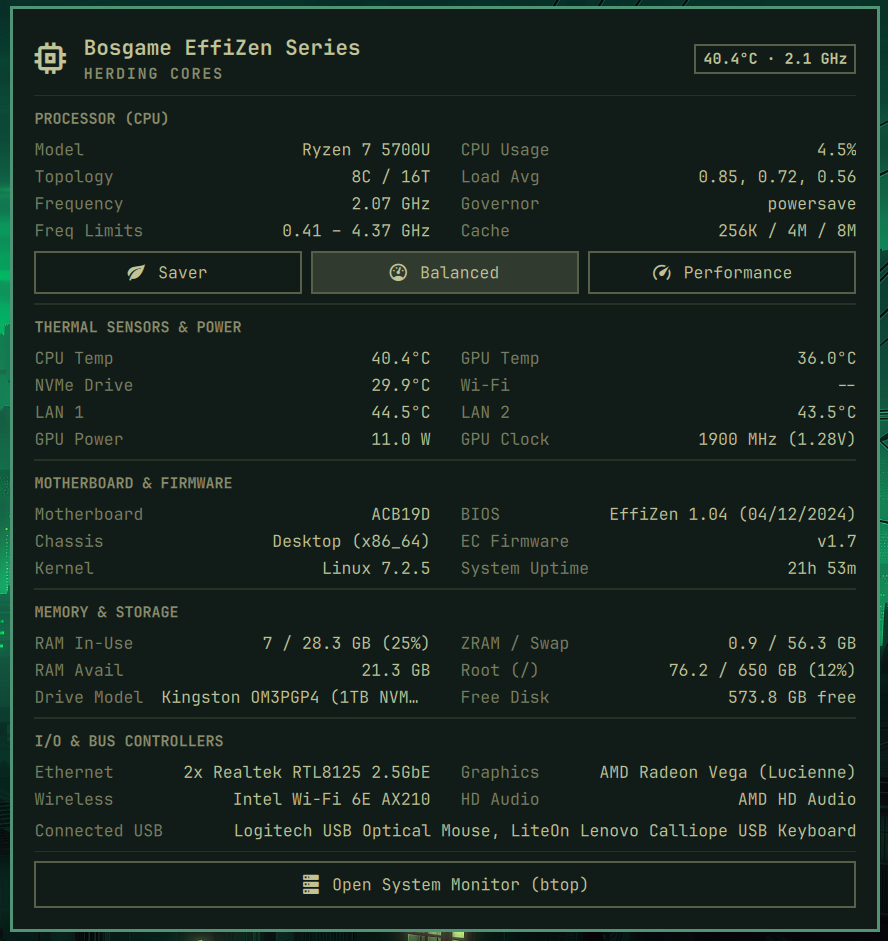
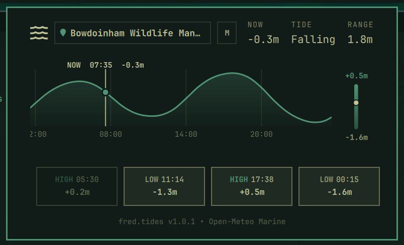
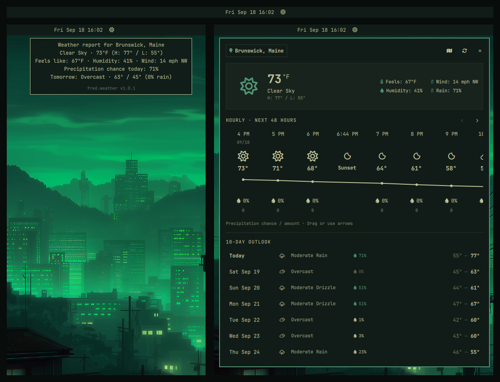
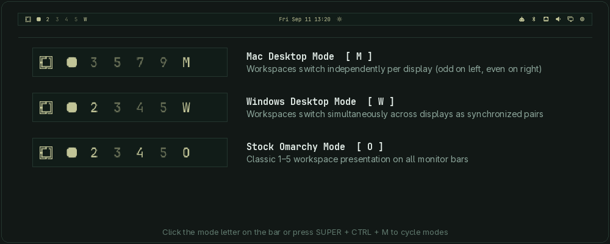

Highly performant, energy-efficient and ergonomic desktop shell plugins for Tamlinux (Hyprland + Quickshell), demonstrating multi-agent AI pair programming best practices.
curl -sSL https://raw.githubusercontent.com/greenermoose/plugin-fred-tamlinux/main/install.sh | bash
AI agent usage on the bar: Antigravity, Claude, Codex, and Cursor in one panel. Displays live rate-limit meters and reset countdowns for all subscriptions (including Google AI Pro for Antigravity). Token agents (Claude, Codex) show the per-day token chart; prompt-mode agents (Cursor, Antigravity) render PROMPTS BY DAY with raw counts and session counts.
omarchy plugin add https://github.com/greenermoose/agents-fred-tamlinux.git --enable

Click to enlargeNext-event countdown badge on the bar, multi-feed iCalendar sync, meeting quick-join, and interactive agenda popout panel.
omarchy plugin add https://github.com/greenermoose/clock-fred-tamlinux.git --enable

Click to enlargeKeyboard shortcut explorer that draws your keyboard, not a generic one. Layouts come from the OS XKB geometries plus a field-observed library for boards no stock geometry describes correctly. Keys with Hyprland binds are tinted; switch on capture mode and any combination or mouse action, Super+K or Super+right-click, reaches the panel instead of running, and the panel says what it would have done. Binds your keyboard cannot send are listed rather than lost. Caps and Num Lock come from the real hardware LEDs. Not a keylogger: capture is panel-scoped, so nothing typed in any other window is ever visible.
omarchy plugin add https://github.com/greenermoose/keyboard-fred-tamlinux.git --enable

Click to enlargeDisplay management for multi-monitor setups: per-display hardware cards, DDC brightness, saved layouts, staged Apply/Keep/Revert with rollback, and per-display link retraining (Reset).
omarchy plugin add https://github.com/greenermoose/monitor-fred-tamlinux.git --enable

Click to enlargeFresh CPU usage, available RAM, and free-disk stats on hover, plus detailed hardware telemetry, thermals, power profiles, and btop integration in the full panel.
omarchy plugin add https://github.com/greenermoose/sysinfo-fred-tamlinux.git --enable

Click to enlargeOcean tide telemetry for Tamlinux: 24-hour scrubbable Catmull-Rom tide curve, vertical range bar with real-time water level indicator, 4 daily high/low tide cards, and multi-monitor focus isolation.
omarchy plugin add https://github.com/greenermoose/tides-fred-tamlinux.git --enable

Click to enlargeWeather intelligence for Tamlinux: 10-day daily forecast, smooth 48-hour temperature curve with minute-precision sunrise/sunset markers, and multi-monitor focus isolation.
omarchy plugin add https://github.com/greenermoose/weather-fred-tamlinux.git --enable

Click to enlargeDynamic workspace indicator with runtime-sized multi-monitor desktop modes (Mac, Windows, Stock) and intelligent per-monitor idle blanking of unused displays.
omarchy plugin add https://github.com/greenermoose/workspaces-fred-tamlinux.git --enable
Personal computing faces a quiet crisis of artificial obsolescence: software gets bloated, insecure, and unsupported long before the underlying silicon actually fails. Across personal workstations, Bosgame mini PCs, and older laptops running fragmented, end-of-life operating systems, maintenance becomes a frustrating burden. Worse, most legacy operating systems lack the introspective capabilities to diagnose whether an unusable system is suffering from genuine hardware failure or software degradation.
Tamlinux (a Wayland desktop on Hyprland and Quickshell, inspired by Arch Linux, Nix, and Omarchy) is aimed at getting the best possible performance from the computing resources you already own. Its philosophy of efficiency and repairability aligns directly with environmental sustainability goals: maximizing the lifespan of existing computing resources, keeping functional machines useful and secure, and reducing electronic waste. Because Tamlinux pairs an ultra-lightweight, standardized foundation with integrated AI agents, troubleshooting, root-cause diagnosis, and system repair become orders of magnitude faster.
Once refined across personal hardware, this suite of plugins is published openly in the spirit of giving back to the community and offering practical examples others can learn from. If time permits, the broader vision includes hosting community hacker gatherings at a local library or school where the public can bring in old computers that no longer work to see if we can get Tamlinux running on them—backed by a complete desktop shell suite designed to make those revived systems easy to troubleshoot, repair, and use.
Software gets bloated, abandoned, and insecure long before physical hardware fails. Reviving aging laptops, workstations, and mini PCs with lightweight, efficient Linux keeps viable silicon in active service, cuts electronic waste, and directly advances environmental sustainability.
When older machines become unusable, most operating systems lack the introspection to reveal whether the fault is hardware failure or software rot. Tamlinux ships with built-in AI agents that provide deep observability, enabling much faster troubleshooting, diagnosis, and repair.
Managing diverse personal machines running fragmented, end-of-life operating systems creates immense maintenance friction. Standardizing all hardware onto Tamlinux unifies workflows, keybindings, and package management, making systems easy to use and maintain.
Publishing this suite shares practical examples others can learn from. The broader goal is hosting community hacker gatherings at local libraries or schools, helping neighbors revive "broken" computers with Tamlinux and a complete, repair-ready desktop shell.
tam-pluginA dedicated CLI tool to inspect, install, update, and diff plugins across local workstations and official marketplace registries:
While commands like list and info are self-explanatory inspection tools, tam-plugin dev is built specifically to power the plugin development cycle. On declarative or package-managed desktops (such as Tamlinux with Home Manager), deployed plugins reside as read-only store symlinks in ~/.config/omarchy/plugins/. Re-running a package build or system switch on every minor QML tweak slows iteration down significantly. Running tam-plugin dev <id> on temporarily swaps the deployed plugin directory for a direct symlink to your local workstation config checkout (via FRED_CONFIG_REPO) and commands Quickshell to rescan plugins. This unlocks instant live hot-reloading: edits to QML or helper scripts reflect on your desktop the second you save. Once finished, tam-plugin dev <id> off cleanly tears down the development symlink and restores your managed system configuration.
# Check live inventory and marketplace status
tam-plugin list --all
# Inspect verified registry data
tam-plugin info fred.workspaces
# Fast development loop for local QML iteration
tam-plugin dev fred.clock on
# ... edit QML with live Quickshell hot-reload ...
tam-plugin dev fred.clock offAll software in this suite is developed collaboratively using a specialized multi-agent AI toolchain:
Claude & Codex: Authoring durable system specifications, multi-step runbooks, and cross-cutting architectural policies.
Antigravity (`agy` / Gemini 3.8 Flash High): Primary coding partner for fast, multi-file pair-programming, security hardening, and git release pipelines.
OpenCode & Grok: Package specifics, Arch Linux internals, and hardware troubleshooting.
Every repository documents session prompts, model versions, and architectural rationale in AI_PROVENANCE.md and carries verified Git co-authorship trailers.